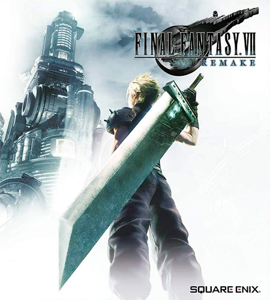

Jogos > RPG Saiba tudo sobre o Fintal Fantasy VII Atualizado em 06/Dezembro/2020 Lançamento Lançamento de Final Fantasy VII.. Devido à dimensão do projeto e o grande número de novas técnicas empregadas, além de ter sido apenas o segundo jogo da Square produzido para o PlayStation, Final Fantasy VII foi originalmente agendado para ser lançado no Japão em dezembro de 1996. Entretanto, o data foi adiada para 31 de janeiro do ano seguinte, depois do período de férias da companhia, que geralmente era muito benéfico na indústria de jogos eletrônicos. Um disco de demonstração chamado Square's Preview foi lançado no início de agosto de 1996 como um bônus do jogo Tobal No. 1. O disco continha o primeiro demo jogável de Final Fantasy VII e prévias de outros jogos como Bushido Blade e SaGa Frontier. O demo permitia que os jogadores jogassem pelo início da seção de Midgar, porém com diferenças notáveis, como por exemplo Aerith estar presente no grupo desde o início e a impossibilidade de usar as Convocações, que nessa altura ainda não haviam sido implementadas. A Sony Computer Entertainment cuidou do lançamento tanto na América do Norte quanto na Europa, sendo também a primeira vez que um jogo Final Fantasy foi lançado neste último território. O lançamento na América do Norte foi precedido por uma enorme campanha de divulgação que durou três meses, consistindo em três comerciais de televisão de trinta segundos de duração transmitidos nas principais emissoras, uma trailer teatral de um minuto, uma promoção especial junto com a Pepsi e anúncios publicados em grandes revistas como a Rolling Stone, Details, Spin e Playboy, também em quadrinhos da Marvel Comics e DC Comics. Várias adições de jogabilidade e história foram feitas para a versão norte-americana, como por exemplo uma troca mais fácil de Matéria, setas que indicavam saídas nas telas de campo e uma cutscene extra, o que fez com que o jogo fosse depois relançado no Japão com o nome de Final Fantasy VII International. Uma conversão para Microsoft Windows foi lançada em 1998, publicada pela Eidos Interactive. Essa versão possuía gráficos melhorados e correções na tradução, escrita e problemas de jogabilidade. Entretanto, a qualidade do áudio foi diminuída por causa do uso do formato MIDI e havia erros em alguns dos full motion videos quando rodados em certos chipsets gráficos. Esses erros ocorreram principalmente devido a problemas inerentes à arquitetura dos PCs, e pelo fato de Final Fantasy VII originalmente não ter sido pensado para rodar em outras plataformas além do PlayStation. Além disso, a equipe encarregada da conversão era completamente diferente daquela que havia desenvolvido o jogo, com muitos dos recursos não estando disponíveis. Além do lançamento original para PlayStation e Microsoft Windows, Final Fantasy VII foi disponibilizado na PlayStation Network em 2009. A versão lançada no Japão era a International. O lançamento foi baixado mais de cem mil vezes apenas durante as duas primeira semanas, tornando-se o jogo mais rapidamente vendido do PlayStation dentro da PlayStation Network. Uma versão melhorada para a alta definição, junto com troféus integrados, foi lançada em 5 de dezembro de 2015 para o PlayStation 4. Ela é baseada na versão melhorada de Microsoft Windows originalmente lançada em 2013 na Steam. Remake  Lançamento de Final Fantasy VII Remake. Final Fantasy VII Remake foi lançado em 10 de abril de 2020 para PlayStation 4, com exclusividade temporária de um ano. A jogabilidade tem a intenção de ser uma fusão de elementos estratégicos e ação em tempo real similar a Dissidia Final Fantasy. Rumores e pedidos para uma recriação de VII existiram por muitos anos, porém vários motivos foram dados sobre o porquê de o projeto não estar sendo desenvolvido. Três membros da equipe original de produção retornaram para ajudar Remake: o desenhista de personagens Tetsuya Nomura voltou como diretor e para cuidar do redenho do elenco; o diretor original Yoshinori Kitase assumiu a produção de produtor; e Kazushige Nojima novamente ficou como roteirista. A decisão de lançar o jogo em múltiplas partes foi tomada para que a equipe não precisasse cortar nenhum conteúdo original. Eles também decidiram adicionar novos elementos e histórias, além de reajustar os desenhos e projeto de personagens e o mundo, a fim de encontrar um equilíbrio entre realismo e estilização. Final Fantasy VII Remake foi bem recebido pela crítica, com elogios aos seus gráficos, jogabilidade, narrativa, música e fidelidade ao original. O jogo vendeu mais de 3,5 milhões de cópias nos primeiros três dias, tornando-se um dos jogos mais vendidos para PlayStation 4.